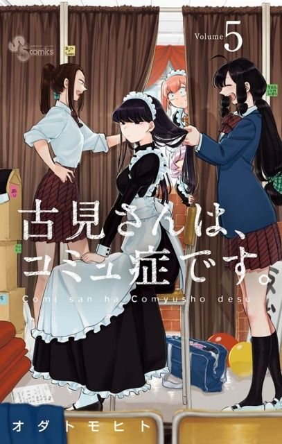
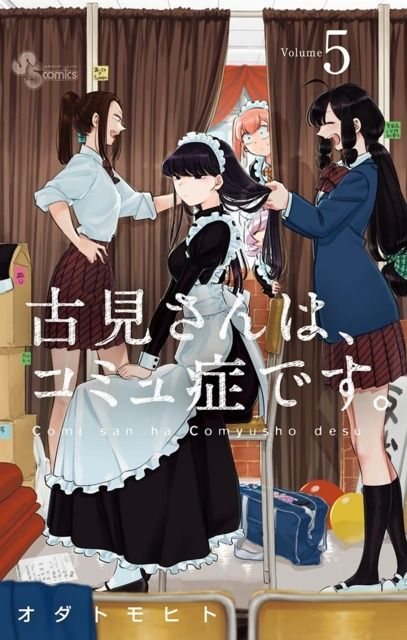

 


A journey to make 100 friends
As Tadano begins his high school career, he discoveres the school beautiful queen Komi. One day, after an encounter with Komi in the classroom, Tadano finds out that despite Komi's cold appearance, she has trouble communicating with other people. After this discovery Tadano embarks on a quest to help achieve Komi's dream of making 100 friends.

Season 1